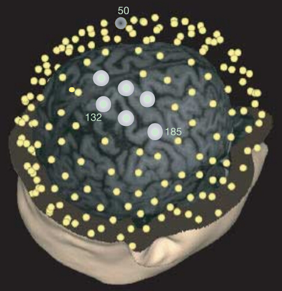

地址: 陕西省西安市长安区西安电子科技大学南校区G楼4层生命科学技术学院
邮编: 710126
电话: 029-81891408
Email: wqin@xidian.edu.cn

邮编: 710126
电话: 029-81891408
Email: wqin@xidian.edu.cn
Copyright © 2014 - All Rights Reserved - www.sleep-china.cn
日期：2004-06-11 来源：中国科技信息研究所
2004的一项研究发现，白天大脑中接受新信息的区域在夜间会产生强烈的睡眠活动， 这表明睡眠对大脑整合新信息至关重要。
大脑进入睡眠阶段时，神经系统会产生慢波活动。科学家认为，慢波活动是深度睡眠的标志， 在某种程度上体现了睡眠需求，人醒着的时间持续越长，夜晚大脑的慢波活动就越激烈。
 在此次研究中，美国威斯康星麦迪逊大学科学家对志愿者进行了两组实验。 首先，志愿者在日间进行一种利用鼠标操作的计算机游戏。在他们进入睡眠后， 他们头皮下埋放的256个电极都指示出正常的慢波活动。在第二组实验中， 研究人员对鼠标的操作进行了调整，这意味着志愿者必须要学会重新操作鼠标。 此后的监测表明，当他们进入睡眠状态时，256个电极中有6个电极指示出异常激烈的慢波活动， 这说明这些电极代表的大脑区域非常需要睡眠。而对不同志愿者脑波的对比显示， 越是费力学习重新操作鼠标的人，睡眠时该区域的慢波活动就越激烈。
研究人员在报告中说，这6个电极代表的右脑后体壁层，该区域在人清醒时控制着眼和手协调， 志愿者在白天学习操作鼠标，夜晚该区域便非常需要睡眠，而且第二天在实验中表现更好。 领导这一研究的托诺尼说，是学习活动而非用脑活动引发了睡眠，这还意味着， 睡眠不是简单地帮助大脑从疲劳中恢复，而是改善学习，大脑的神经回路在睡眠中发生了重新整合。
转载：www.bio1000.com/reseach/xueke/bioinformatics/111419.html
Copyright © 2014 - All Rights Reserved - www.sleep-china.cn